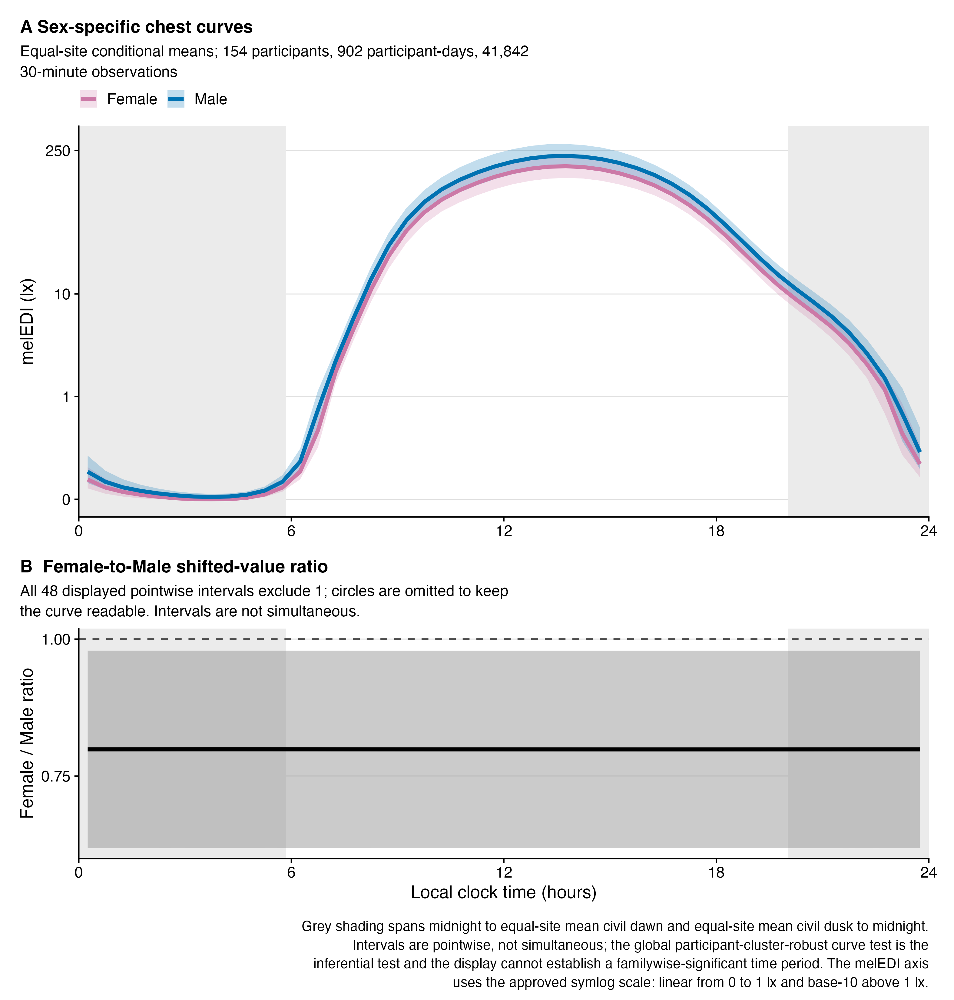
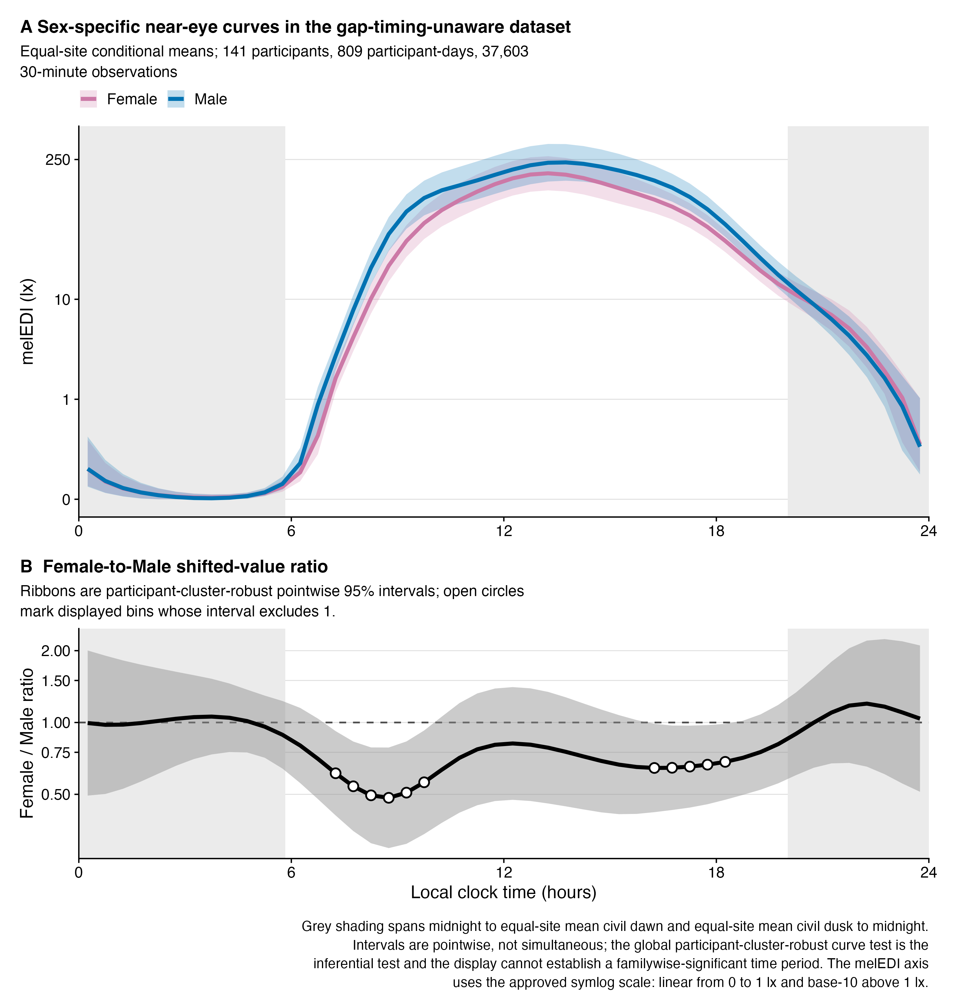
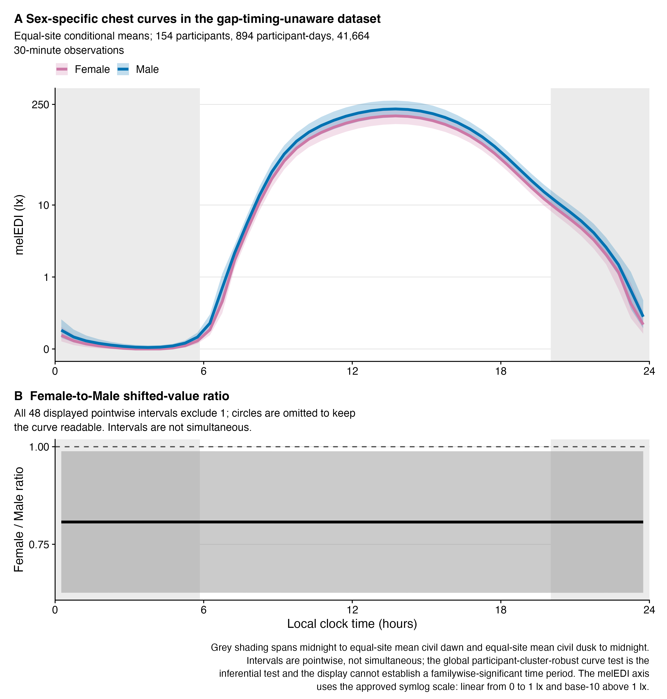
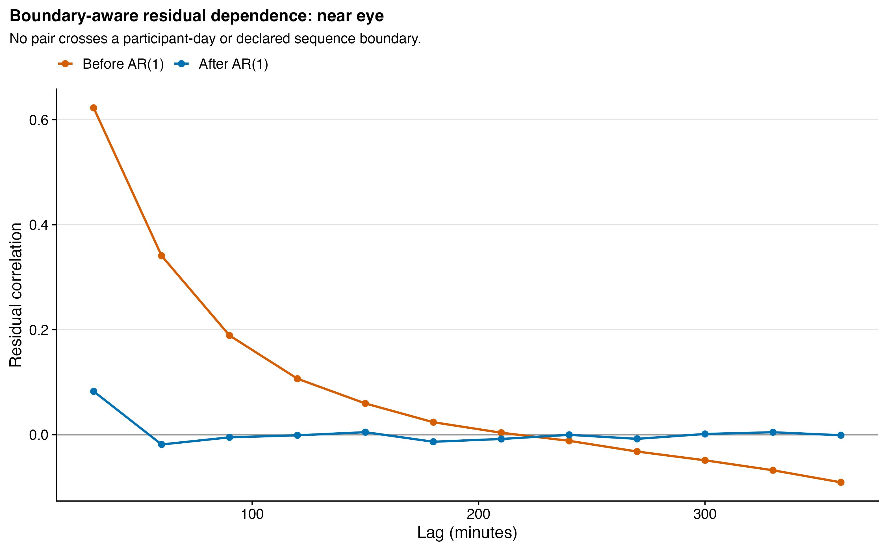

| Role | Participants | Female / Male participants | Participant-days | 30-minute observations | Sites | |
|---|---|---|---|---|---|---|
| Near eye | Primary | 141 | 79 / 62 | 816 | 37,756 | 9 |
| Chest | Complementary | 154 | 86 / 68 | 902 | 41,842 | 8 |
H11: Biological sex and daily personal light-exposure patterns
Sex-specific 24-hour melanopic light-exposure curves at near-eye and chest level
Question
The preregistered hypothesis was:
“H11: Diurnal exposure patterns differ by sex.”
The recorded predictor is biological sex, coded Female or Male. Gender identity is a distinct construct and was not analysed. The analytical question is whether the fitted 24-hour personal melanopic equivalent daylight illuminance (melEDI) profile differs between participants recorded as Female and Male after accounting for site-specific temporal patterns, repeated observations within participants and days, and short-lag residual dependence.
TipAnswer in brief
After false-discovery-rate (FDR) adjustment, the primary near-eye Female-minus-Male curve differed globally (adjusted p = 0.028), and the complementary chest curve also differed globally (adjusted p = 0.029). The secondary level/shape analysis could not cleanly assign either globally supported curve to an independently resolved level or shape component; this does not overturn the global results. In the exploratory activity-complete sample, near eye was already unsupported before activity adjustment (raw p = 0.160) and remained unsupported after it (raw p = 0.364). At chest, the corresponding raw p-value changed from 0.025 to 0.050. This sensitivity is compatible with attenuation but cannot identify activity as a mechanism. Model checks classified all accepted fits as acceptable with specified limitations.
What was analysed
The near-eye sensor position is primary because it measures the light field closer to the eyes. The chest sensor position is analysed separately as complementary evidence and is not a measure of ocular exposure. The placements are neither pooled nor treated as independent replicates. The response is the 30-minute arithmetic mean melEDI, modelled as log10(melEDI + 0.1).
The estimand is the complete fitted Female-minus-Male 24-hour curve at equal clock-time weighting. Its site-average fitted mean averages across included sites and gives each site equal weight. The participant is the independent unit for robust inference. A participant-day is one participant’s included observations on one local calendar day.
The primary near-eye model contains 141 participants (79 Female, 62 Male), 816 participant-days, 37,756 30-minute observations, and all nine sites. The chest model contains 154 participants (86 Female, 68 Male), 902 participant-days, 41,842 observations, and eight sites. These are the accepted temporal-model samples; no extra H11-specific row deletion was applied.
NoteKey terms
- Site-average fitted mean: the fitted mean averaged across included sites, with each site given equal weight.
- Complete-curve test: one joint test of the time-constant and time-varying Female-minus-Male contributions across the whole 24-hour curve.
- Pointwise 95% confidence interval (95% CI): uncertainty for one displayed clock bin; it is not a simultaneous band across the full day.
- Shifted-value ratio: both fitted melEDI values are shifted by the model’s 0.1-lx offset before the Female-to-Male ratio is calculated.
- AR(1): a representation of autocorrelation in which residual similarity is stronger for measurements closer together in time.
- Symlog: a display scale that is linear from 0 to 1 lx and base-10 logarithmic above 1 lx, with labels retained in original units.
Model and inference
The nonlinear generalized additive model (GAM) allows the daily melEDI pattern to vary smoothly and nonlinearly over clock time. Its cyclic common daily curve and cyclic Female-specific deviation join smoothly across midnight. The model also includes site-specific temporal deviations, participant-specific time curves, and participant-day random effects. The latter two represent remaining repeated-measure variation after the shared time, biological-sex, and site structure is considered.
Autocorrelation is residual similarity between measurements close together in time. An AR(1) structure represents this dependence as stronger at shorter lags. Sequence starts prevent that correlation from crossing participant-day or gap boundaries. The detailed estimation and robust-covariance specification is documented in the preparation and provenance companion.
The following evaluated R cell reads and prints the exact Wilkinson formula supplied to every accepted H11 full model. Here, response is the transformed melEDI outcome and Male is the reference level.
response ~ sex + s(time_hour, bs = "cc", k = 12) + s(time_hour,
by = sex_smooth, bs = "cc", k = 12) + s(time_hour, site,
bs = "sz", k = 12) + s(time_hour, participant, bs = "fs",
k = 10) + s(participant_day, bs = "re")The complete-curve, or global, test jointly evaluates the time-constant and time-varying contributions to the 48-bin Female-minus-Male curve. It produces one decision per placement and dataset. FDR adjustment is applied within separately labelled test families. Each global family has one test. The planned level and shape attribution tests form a separate two-test FDR family within each placement. Those secondary tests do not repeat the global test, and failure to resolve either component does not invalidate a supported global curve.
All curve and contrast intervals are participant-cluster-robust pointwise 95% CIs. Each applies to one displayed clock bin and does not support a simultaneous significant-period claim.
| Role | Test | F statistic | Numerator df | Denominator df | Raw p | FDR-adjusted p | Support | |
|---|---|---|---|---|---|---|---|---|
| Near eye | Primary | Complete Female-minus-Male 24-hour curve | 20.946 | 9.692 | 131 | 0.028 | 0.028 | Supported |
| Chest | Complementary | Complete Female-minus-Male 24-hour curve | 4.876 | 1.003 | 152 | 0.029 | 0.029 | Supported |
| Primary near-eye fitted sample: 141 participants, 816 participant-days, 37,756 30-minute observations, and 9 sites. Complementary chest fitted sample: 154 participants, 902 participant-days, 41,842 30-minute observations, and 8 sites. | ||||||||
| Each row is one joint complete-curve test. Raw p is bold at raw p < 0.050; FDR-adjusted p is bold independently at adjusted p < 0.050. Each labelled global family contains one test, so the stored raw and adjusted values coincide. | ||||||||
Both complete curves were supported. For near eye, raw p and FDR-adjusted p were 0.028. For chest, raw p and FDR-adjusted p were 0.029. Within each one-test global family, the stored raw and adjusted values are identical.
Primary near-eye result
![A two-panel near-eye figure. The upper panel shows Female and Male fitted melEDI curves across 24 hours with pink and blue lines and pointwise confidence ribbons on a symlog axis that is linear from zero to one lux and logarithmic above one lux; both rise in the morning and decline at night, with the Female curve lower around morning and late afternoon. The lower panel shows the Female-to-Male shifted-value ratio with a horizontal null line at one; the deepest ratio is about 0.47 near 08:45. Intervals are pointwise, not simultaneous.](../../artifacts/10_figures/H11/stage3/H11_reader_primary_near_eye_curves.png)
The minimum displayed ratio was 0.471 (0.284–0.779) at 08:45. The maximum was 1.266 (0.678–2.363) at 22:15. Pointwise intervals excluded one in the displayed 30-minute bins from 07:00–10:00 and 16:00–18:30, with Female lower. These clock ranges are descriptive collections of pointwise intervals; they are not a familywise significant period.
Conditional effect-size context
Because the global near-eye test was supported, the conditional effect-size estimators are reported.
| Estimate (95% CI) | Unit | Interpretation | |
|---|---|---|---|
| Conditional shifted-value ratio: Female / Male | 0.808 (0.639–1.022) | Shifted-value melEDI ratio | Time-constant sex component conditional on the cyclic sex-specific deviation |
| Across-clock fitted-curve variation | 0.0113 (0.0000–0.0306) | Squared log10(melEDI + 0.1) units | Mean squared Female-minus-Male fitted-curve contrast across 48 equally weighted clock bins |
| Intervals are participant-cluster robust. Fitted-curve variation is an effect-size description, not a percentage of outcome variation explained. | |||
The conditional level ratio is compatible with both a moderate lower Female level and a negligible difference. The fitted-curve variation is small on the model scale despite a statistically supported structured curve difference.
Complementary chest result

The chest ratio was effectively time-constant at 0.793 (0.645–0.976). All 48 displayed pointwise intervals excluded one. Because the intervals are pointwise, this observation does not establish a simultaneous all-day difference.
Conditional effect-size context
| Estimate (95% CI) | Unit | Interpretation | |
|---|---|---|---|
| Conditional shifted-value ratio: Female / Male | 0.793 (0.645–0.976) | Shifted-value melEDI ratio | Time-constant sex component conditional on the cyclic sex-specific deviation |
| Across-clock fitted-curve variation | 0.0051 (0.0000–0.0141) | Squared log10(melEDI + 0.1) units | Mean squared Female-minus-Male fitted-curve contrast across 48 equally weighted clock bins |
| Intervals are participant-cluster robust. Fitted-curve variation is an effect-size description, not a percentage of outcome variation explained. | |||
The chest shifted-value ratio is visually almost time-constant. Its conditional interpretation remains subordinate to the complete-curve result because the model also contains the cyclic Female-minus-Male deviation.
Can the global results be separated into level and shape?
These secondary attribution tests are subordinate to the complete-curve tests in Table 2. They ask whether each globally supported curve can be assigned cleanly to an independently supported level or shape component.
Primary near eye
| F statistic | Numerator df | Raw p | FDR-adjusted p | Conclusion | |
|---|---|---|---|---|---|
| Near eye | |||||
| Level | 3.213 | 1.000 | 0.075 | 0.075 | Not supported |
| Shape | 17.896 | 8.692 | 0.043 | 0.075 | Not supported |
| Within each placement and dataset, level and shape form a two-test false-discovery-rate family. Raw and adjusted p-values are labelled and bolded independently at their respective p < 0.050 rules. These secondary tests ask whether the globally tested curve can be resolved into an independently supported level or shape component; they do not retest or invalidate the separate global curve result. | |||||
The secondary attribution did not cleanly resolve the globally supported curve into an independently supported level or shape component. The shape component had raw p = 0.043 but FDR-adjusted p = 0.075; the level component had raw and adjusted p = 0.075. The global result is not formed by adding or combining these two p-values. Evidence can be distributed across correlated level and shape directions, so this result expresses uncertainty about attribution and does not make the global result invalid.
Complementary chest
| F statistic | Numerator df | Raw p | FDR-adjusted p | Conclusion | |
|---|---|---|---|---|---|
| Chest | |||||
| Level | 4.877 | 1.000 | 0.029 | 0.057 | Not supported |
| Shape | 0.000 | 0.003 | 0.986 | 0.986 | Not supported |
| Within each placement and dataset, level and shape form a two-test false-discovery-rate family. Raw and adjusted p-values are labelled and bolded independently at their respective p < 0.050 rules. These secondary tests ask whether the globally tested curve can be resolved into an independently supported level or shape component; they do not retest or invalidate the separate global curve result. | |||||
The chest global result is visually level-like, but the secondary attribution did not resolve that result independently to the level term: its raw p = 0.029 and FDR-adjusted p = 0.057. The shape component had raw and adjusted p = 0.986. This limits component attribution and does not overturn the separately supported complete-curve result.
Why there is no direct placement identity plot
The all-available near-eye and chest models use different samples, so plotting their estimates against one another would confound placement with sample composition. A stored common frame contains 112 participants, 643 participant- days, 29,786 matched observations, and eight sites, but no accepted H11 model was fitted to that frame and no scalar temporal estimand was predeclared. Therefore a matched identity scatterplot is not applicable. The separate near-eye and chest curves above are the closest valid comparison; they do not test placement differences or establish equivalence.
Exploratory activity-context sensitivity
The accepted global test remains unadjusted for activity. An exploratory sensitivity asked whether the estimated Female-minus-Male curve changed after adding the recorded hourly activity context. To separate adjustment from sample selection, the accepted H11 model was first refitted without activity on the exact activity-complete sample and then refitted with activity on those same observations.
Diary hours were eligible only when exactly one activity was selected. Hours with multiple selections, no selection, all missing responses, or only an unspecified “other” activity were excluded rather than duplicated across categories. The retained contexts were home (reference), sleep, road or vehicle, indoor work, and outdoor activity. A 30-minute exposure observation was attached only when it lay wholly within one unique diary hour. This restriction produced the following exact samples.
| Role | Participants | Female / Male participants | Participant-days | 30-minute observations | Sites | |
|---|---|---|---|---|---|---|
| Near eye | Primary near-eye sensitivity | 126 | 71 / 55 | 724 | 30,499 | 9 |
| Chest | Complementary chest sensitivity | 150 | 83 / 67 | 875 | 36,711 | 8 |
The near-eye activity-complete sample contains 126 participants (71 Female, 55 Male), 724 participant-days, 30,499 30-minute observations, and nine sites. The chest sample contains 150 participants (83 Female, 67 Male), 875 participant- days, 36,711 observations, and eight sites.
The following evaluated R cell prints the exact Wilkinson formulas used for the same-sample comparison. The adjusted model adds both the activity level and activity-specific cyclic temporal deviations. A single placement-specific AR(1) correlation parameter estimated from the preliminary adjusted model was held fixed in both final fits so that the comparison did not change its autocorrelation assumption.
$`Activity-complete sample, unadjusted`
response ~ sex + s(time_hour, bs = "cc", k = 12) + s(time_hour,
by = sex_smooth, bs = "cc", k = 12) + s(time_hour, site,
bs = "sz", k = 12) + s(time_hour, participant, bs = "fs",
k = 10) + s(participant_day, bs = "re")
<environment: 0xa533b1888>
$`Same sample, activity-adjusted`
response ~ sex + activity + s(time_hour, bs = "cc", k = 12) +
s(time_hour, by = sex_smooth, bs = "cc", k = 12) + s(time_hour,
by = activity_smooth, bs = "cc", k = 12, id = 2) + s(time_hour,
site, bs = "sz", k = 12) + s(time_hour, participant, bs = "fs",
k = 10) + s(participant_day, bs = "re")
<environment: 0xa533b1888>| Participants | Participant-days | 30-minute observations | F statistic | Numerator df | Denominator df | Raw p | FDR-adjusted p | Conclusion | |
|---|---|---|---|---|---|---|---|---|---|
| Near eye | |||||||||
| Accepted all-available model | 141 | 816 | 37,756 | 20.946 | 9.692 | 131 | 0.028 | 0.028 | Supported in this model |
| Activity-complete sample, unadjusted | 126 | 724 | 30,499 | 13.619 | 9.195 | 116 | 0.160 | 0.160 | Not supported in this model |
| Same sample, activity-adjusted | 126 | 724 | 30,499 | 9.025 | 8.476 | 117 | 0.364 | 0.364 | Not supported in this model |
| Chest | |||||||||
| Accepted all-available model | 154 | 902 | 41,842 | 4.876 | 1.003 | 152 | 0.029 | 0.029 | Supported in this model |
| Activity-complete sample, unadjusted | 150 | 875 | 36,711 | 5.095 | 1.001 | 148 | 0.025 | 0.025 | Supported in this model |
| Same sample, activity-adjusted | 150 | 875 | 36,711 | 3.903 | 1.003 | 148 | 0.050 | 0.050 | Not supported in this model |
| The two activity-complete models use the same observations within placement; the accepted all-available model uses the larger accepted sample. Each row is a one-test family, so raw and FDR-adjusted p-values coincide. Raw and adjusted values are bolded independently at their respective p < 0.050 rules. The activity comparison is exploratory. | |||||||||
For near eye, restricting the data to observations with eligible activity information was already sufficient to change the global result from the accepted all-available raw p = 0.028 to raw p = 0.160 before activity was added. The activity-adjusted result was raw p = 0.364. Therefore the near-eye comparison cannot attribute the loss of threshold support to activity adjustment; sample restriction precedes it.
At chest, the exact same-sample raw p-value changed from 0.025 without activity to 0.050 with activity. The adjusted value is displayed as FDR-adjusted p = 0.050. This small threshold crossing is compatible with attenuation, but it is not evidence that activity mediates or explains the observed sex association.

The activity-adjusted near-eye minimum ratio was 0.729 (0.488–1.090) at 08:15. The activity-adjusted chest ratio was approximately 0.826 (0.682–1.000); its exact upper confidence limit was 1.000034. No displayed activity-adjusted pointwise interval excluded one at either placement. These intervals remain pointwise and do not define a simultaneously significant period.
An additional activity-adjusted sex effect-size estimator was required only if the adjusted global sex curve had raw p < 0.050. That condition was not met at either placement, so no activity-adjusted effect-size estimate is reported.
| Assessment | Final lag-1 correlation | Largest participant share (%) | Effective participants | |
|---|---|---|---|---|
| Near eye | ||||
| Activity-complete sample, unadjusted | Acceptable with Specified Limitations | 0.144 | 4.5 | 66.3 |
| Same sample, activity-adjusted | Acceptable with Specified Limitations | 0.084 | 3.2 | 71.7 |
| Chest | ||||
| Activity-complete sample, unadjusted | Acceptable with Specified Limitations | 0.131 | 7.8 | 35.3 |
| Same sample, activity-adjusted | Acceptable with Specified Limitations | 0.075 | 5.7 | 42.4 |
| Participant share and effective-participant summaries describe concentration of the participant-cluster robust covariance. | ||||
All four same-sample fits were acceptable with specified limitations. They converged without serious warnings, retained cyclic closure and the inherited site constraint, and had no severe model-flexibility flag. Final boundary-aware lag-1 residual correlations were 0.144 and 0.084 near eye and 0.131 and 0.075 at chest for the unadjusted and adjusted fits, respectively. The sensitivity is limited to uniquely mapped single-activity diary hours and remains observational; neither adjustment nor a change around a significance threshold identifies a behavioural mechanism.
Data-preparation sensitivity
A predefined sensitivity uses the gap-timing-unaware dataset. It still passed the general 50%-per-hour and 80%-per-day coverage rules. “Gap-timing- unaware” means that the timing of the remaining missing observations is not used for metric-specific adjustment; gaps, missingness, and coverage were not ignored. For this contrast only, the primary dataset could be interpreted as a time-sensitive primary metric dataset. Below, it is called simply the primary dataset.
| Role | Participants | Female / Male participants | Participant-days | 30-minute observations | Sites | |
|---|---|---|---|---|---|---|
| Near eye | Sensitivity | 141 | 79 / 62 | 809 | 37,603 | 9 |
| Chest | Sensitivity | 154 | 86 / 68 | 894 | 41,664 | 8 |
The sensitivity retains 141 near-eye participants and 154 chest participants, but contains 809 and 894 participant-days and 37,603 and 41,664 observations, respectively.
| F statistic | Numerator df | Denominator df | Raw p | FDR-adjusted p | Support | |
|---|---|---|---|---|---|---|
| Near eye | 20.501 | 9.614 | 131 | 0.026 | 0.026 | Supported |
| Chest | 4.423 | 1.005 | 152 | 0.037 | 0.037 | Supported |
| The complete 48-bin Female-minus-Male curve is tested jointly. Raw p is bold at raw p < 0.050; FDR-adjusted p is bold independently at adjusted p < 0.050. The global family contains one test per placement and dataset, so its adjusted and raw values coincide. | ||||||
Near eye remained supported (raw and FDR-adjusted p = 0.026) and chest remained supported (raw and FDR-adjusted p = 0.037).
| F statistic | Numerator df | Raw p | FDR-adjusted p | Conclusion | |
|---|---|---|---|---|---|
| Chest | |||||
| Level | 4.425 | 1.000 | 0.037 | 0.074 | Not supported |
| Shape | 0.000 | 0.005 | 0.985 | 0.985 | Not supported |
| Near eye | |||||
| Level | 3.075 | 1.000 | 0.082 | 0.082 | Not supported |
| Shape | 17.682 | 8.614 | 0.037 | 0.074 | Not supported |
| Within each placement and dataset, level and shape form a two-test false-discovery-rate family. Raw and adjusted p-values are labelled and bolded independently at their respective p < 0.050 rules. These secondary tests ask whether the globally tested curve can be resolved into an independently supported level or shape component; they do not retest or invalidate the separate global curve result. | |||||
The secondary sensitivity decompositions likewise did not resolve the globally supported curves into independently supported level or shape components after FDR adjustment. This does not alter either sensitivity global result.

The minimum ratio was 0.484 (0.298–0.786) at 08:45. The same displayed pointwise clock ranges excluded one as in the primary dataset.

The chest ratio was approximately 0.801 (0.650–0.987), with all 48 pointwise intervals excluding one. Again, this is not a simultaneous all-day claim.
The central conclusion is stable to this preparation change: the complete near-eye and chest curves remain supported. The secondary level/shape analyses do not cleanly attribute either global result to one independently resolved component.
Model checks
The following model checks (model diagnostics) assess fit quality and the remaining limitations of the accepted models.
| Assessment | Final lag-1 correlation | Largest participant share (%) | Effective participants | |
|---|---|---|---|---|
| Primary dataset | ||||
| Near eye | Acceptable with Specified Limitations | 0.083 | 2.7 | 87.0 |
| Chest | Acceptable with Specified Limitations | 0.070 | 7.5 | 42.9 |
| Gap-timing-unaware dataset | ||||
| Near eye | Acceptable with Specified Limitations | 0.082 | 3.0 | 86.7 |
| Chest | Acceptable with Specified Limitations | 0.071 | 7.6 | 35.8 |
| Participant share is the largest contribution to the unscaled participant-cluster covariance meat trace. Effective participants is the corresponding trace-based concentration summary. | ||||
All four models are acceptable with specified limitations. They converged without serious fitting warnings; the cyclic sex curves close at midnight; site deviations satisfy their sum-to-zero constraint; and no severe basis- dimension flag was found. The accepted AR structure reduced boundary-aware lag-1 residual correlation from approximately 0.60–0.62 before adjustment to 0.070–0.083 in the final residuals.



Residual-distribution diagnostic source data
Together, the residual figures show the main continuous diagnostic outcomes: the accepted AR(1) structure removes most short-lag dependence, while the final residuals remain centered near zero but retain heavy tails and fitted-value-dependent spread. Convergence, cyclic closure, the site constraint, and basis-dimension flags remain in the diagnostic table because they are pass/fail or count outcomes rather than quantities that benefit from a separate plot.
No single participant dominates the robust covariance: the largest participant contribution is 2.8–3.0% near eye and 7.5–7.6% at chest. The coefficient-held-fixed delete-one-participant covariance check retains the global decision for every participant. This check probes covariance influence; it is not a leave-one-participant-out model-refit sensitivity.
The remaining limitations are material but do not invalidate the specified test. Exact zeros, heavy tails, heteroscedasticity, and concurvity remain under the Gaussian log-scale mean model. Results are conditional on the observed sites; the site sample is too small for broad site-population generalisation, and leave-one-site-out refits remain unresolved. The registered hourly geometric-mean outcome remains the documented preregistered specification but is outside the accepted H11 analysis rather than an outstanding sensitivity. A fitted common-placement sample, an all-zero-inclusive preparation, and alternative temporal model forms remain unresolved. The activity-context sensitivity is now reported, but it is limited to uniquely mapped single- activity diary hours and cannot distinguish covariate adjustment from selection into the activity-complete sample without the explicit same-sample comparison shown above.
Interpretation
These data support a biological-sex difference in the complete fitted daily melEDI profile at near-eye level, with complementary support at chest level. Near-eye pointwise estimates indicate the largest relative separation around the morning, whereas the chest contrast is nearly time-constant. However, the planned component analysis cannot attribute the supported joint result specifically to a level or shape component after multiplicity adjustment. That attribution limitation does not weaken the definition or validity of the separate global curve test.
Activity adjustment did not yield a supported adjusted global curve on the activity-complete sample at either placement. For near eye, however, the same-sample unadjusted curve was already unsupported, so the change cannot be assigned to activity. For chest, the curve magnitude changed modestly and the raw p-value moved just above 0.050. Neither pattern establishes mediation or a causal activity pathway.
The effect-size summaries are modest on the fitted model scale, and all clock- specific confidence intervals are pointwise. The result is therefore evidence for an overall structured association, not proof of a significant clock period, not an equivalence or placement-difference analysis, and not evidence that biological sex causally determines light exposure. Differences may reflect behavioural, occupational, environmental, or other correlated factors that this observational model does not identify.
Preregistration deviations
The analysis differs from, or makes operationally explicit, the preregistered plan in the following ways. The registered hourly geometric-mean outcome remains preregistration provenance but is outside and superseded by the author-approved final H11 analysis. It is not an outstanding or unresolved sensitivity.
| Preregistered | Analysed | Consequence | |
|---|---|---|---|
| Outcome and epoch | Hourly geometric-mean melEDI | Thirty-minute arithmetic-mean melEDI, transformed as log10(melEDI + 0.1) | The accepted H11 estimand, row count, scale, and dependence structure follow the author-approved H02 adaptation and therefore differ from preregistration; the registered hourly outcome remains the documented preregistered specification, not an outstanding H11 sensitivity. |
| Placement role | Chest primary; near eye as robustness placement | Near eye primary; chest complementary | The measurement closer to the eye carries the primary interpretation. |
| Day inclusion | Coverage-based exclusions; no deletion solely because a binned profile is constant | Inherited coverage rules plus upstream exclusion of otherwise eligible verified exact-all-zero device days; supported constant profiles retained | The fitted samples reconcile to the accepted temporal-analysis samples. |
| Analysis hierarchy | Repeated hourly observations with participant and site effects | Thirty-minute observations nested in participant-day and participant, conditional on observed sites | Participant-specific curves and participant-day intercepts change weighting and uncertainty. |
| Preregistered | Analysed | Consequence | |
|---|---|---|---|
| Sex and time terms | Parametric sex effect plus cyclic sex-specific time smooth | Parametric Female level plus cyclic Female-minus-Male deviation; common daily curve retained | The joint null covers both a time-constant level and a time-varying shape difference. |
| Site and participant structure | Site factor smooth, site random effect, and participant random-effect smooth | Inherited sum-to-zero site temporal deviations, participant-specific time curves, and participant-day random intercept; no site random intercept | Inference is conditional on these observed sites and the richer repeated-measure structure. |
| Additional context | No photoperiod-state or activity-adjusted causal estimand | No photoperiod-state term or activity adjustment in the accepted test; an exploratory same-sample activity-context adjustment was added | Sample restriction and observational adjustment are shown separately; no behavioural, causal, or mediational interpretation is made. |
| Inference and multiplicity | Delta AIC of at least 2; AR(1) if needed; FDR if multiple tests | Participant-cluster robust global curve test; separate two-test BH level/shape decomposition | The confirmatory claim is the complete curve, not a selected pointwise interval or raw component p-value. |
| Effect magnitude | Not operationally defined | Female-to-Male shifted ratios and robust fitted-curve variation, reported only after a supported global result | Fitted-curve variation is not described as variance explained. |
Retained samples include documented participants outside the preregistered age or employment criteria. Comparable exclusion-sensitivity coverage is not uniform across all affected hypotheses.
- Current sample-eligibility qualification:
DEV-003. - Outcome and epoch:
DEV-042. - Placement role:
DEV-001. - Day inclusion:
DEV-019andDEV-057. - Analysis hierarchy:
DEV-044andDEV-045. - Biological-sex and time terms:
DEV-043. - Site and participant structure:
DEV-044andDEV-045. - Exploratory activity context:
DEV-047. - Complete-curve inference and multiplicity:
DEV-048.
Source data and technical provenance
The scientific preparation, model construction, and provenance checks are documented in the H11 analysis preparation and provenance.
Exact full-precision reader sources are available for the fitted samples, global tests, level and shape decomposition, effect-size summaries, sex-specific curves, Female-minus-Male contrasts, activity-context samples, activity-context global comparisons, activity-context pointwise contrasts, accepted-model diagnostics, residual-distribution diagnostics, and activity-context diagnostics.